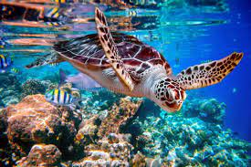

Sea turtles (superfamily Chelonioidea), sometimes called marine turtles,[3] are reptiles of the order Testudines and
of the suborder Cryptodira. The seven existing species of sea turtles are the flatback, green, hawksbill,
leatherback, loggerhead, Kemp's ridley, and olive ridley sea turtles.[4] All six of the sea turtle species present
in US waters (all of those listed above except the flatback) are listed as endangered and/or threatened under the
Endangered Species Act.[5] The seventh sea turtle species is the flatback, which exists in the waters of Australia,
Papua New Guinea and Indonesia.[5] Sea turtles can be separated into the categories of hard-shelled (cheloniid) and
leathery-shelled (dermochelyid).[6] There is only one dermochelyid species which is the leatherback sea turtle.[6]
<